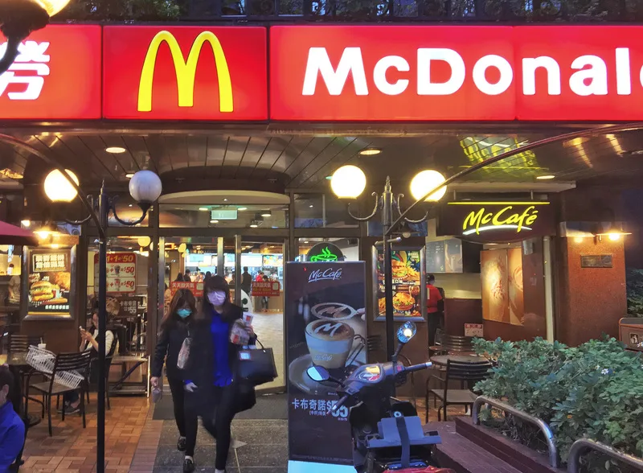

麥當勞今天宣布調整菜單，從3月15日起預計將停賣9大品項，另外，除了新增2款新漢堡外，茶飲（不含冰紅茶、冰綠茶） 、咖啡及巧克力，轉為供應單一尺寸；其餘碳酸飲料與冰紅茶、冰綠茶，則從4月1日起停售大杯飲料。

麥當勞今天發布新聞稿表示，順應整體消費趨勢，持續提供多樣飲品選擇，並整合現行飲料尺寸，以更符合消費者需求。從3月15日起，茶飲（不含冰紅茶、冰綠茶）、咖啡及巧克力，轉為供應單一尺寸；其餘碳酸飲料與冰紅茶、冰綠茶，則自4月1日起，由原本供應小、中、大杯，改為供應小或中杯。
除此之外，3月15日起預計停賣9大品項，包含
3月15日起也新增雙層麥香鷄與麥克雙牛堡，而原僅於McCafé櫃檯販售的「義式濃縮」、「熱巧克力」、「Evian礦泉水」，也將正式進駐每間麥當勞餐廳飲品菜單。
麥當勞表示，今年甜心卡攜手LINE FRIENDS全球著名卡通IP「BT21」，共有4款設計，A區新增金黃地瓜條、雙倍OREO冰炫風及熱蜂蜜奶茶，B區的小杯熱紅茶與小杯熱奶茶則升級為中杯。摩斯漢堡近期則是推出會員專屬活動，限時4天在摩斯漢堡台北車站、桃園、新竹、台中高鐵店，邀請旅客使用APP。